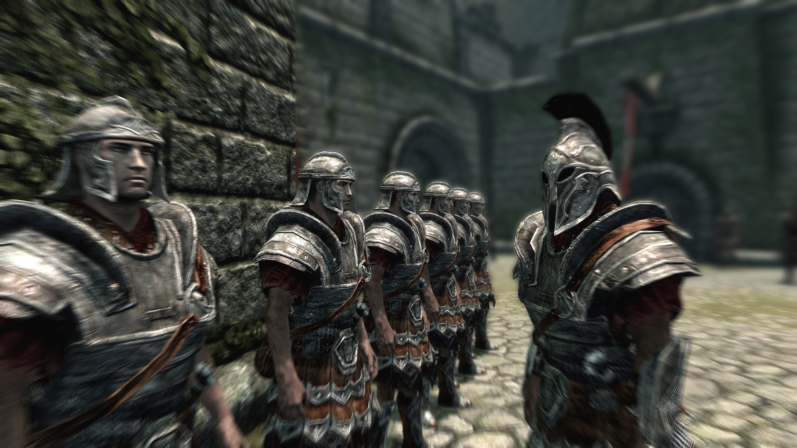
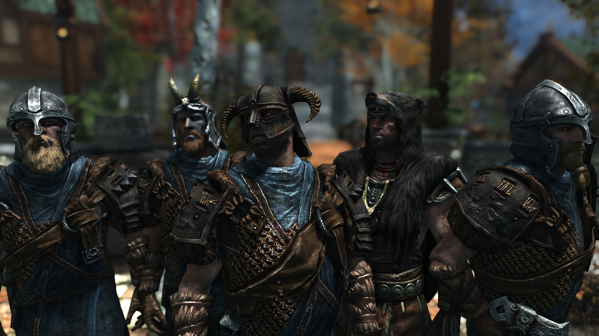
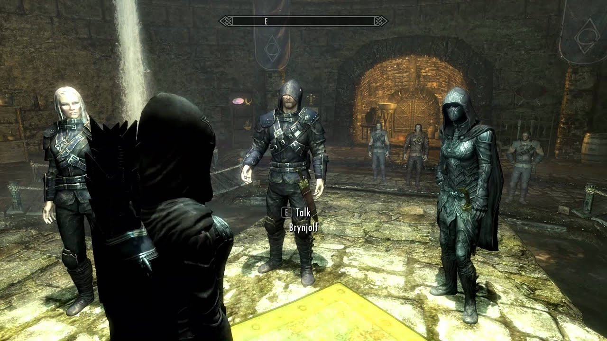
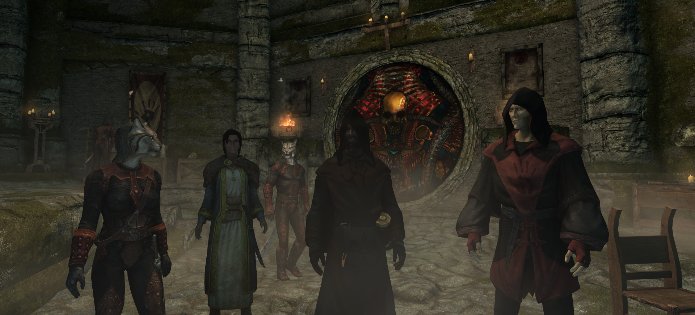
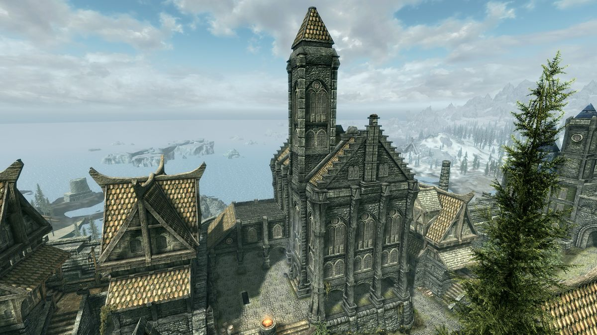

Skyrim possui várias guildas que os jogadores podem se juntar e progredir em suas respectivas histórias e missões. Cada guilda tem sua própria identidade, liderança e conjunto único de habilidades e benefícios. Aqui estão algumas guildas presentes em Skyrim:
| NOME | LOCALIZAÇÃO | INFORMAÇÕES | IMAGENS |
|---|---|---|---|
| Imperial Legion | Solitude | A Guilda dos Imperiais (Imperial Legion) é uma facção militar. Eles representam o exército do Império de Tamriel e têm como objetivo manter a ordem e a estabilidade em Skyrim. Liderados pelo General Tullius em Solitude, os Imperiais lutam para manter o domínio imperial na região, enfrentando a resistência dos Stormcloaks, que buscam a independência de Skyrim. |  |
| Stormcloaks | Windhelm | Os Stormcloaks são uma facção rebelde liderada por Ulfric Stormcloak, que busca a independência de Skyrim em relação ao Império de Tamriel. Os jogadores têm a opção de se juntar aos Stormcloaks e lutar contra a dominação imperial. |  |
| Companions | Whinterun | A Companions é uma guilda de guerreiros em Whiterun. Eles são conhecidos por sua habilidade em combate corpo a corpo e têm um forte código de honra. Os jogadores podem se juntar à guilda e progredir através de missões de combate, ganhando novas habilidades e se tornando um membro de destaque. |  |
| Thieves Guild | Riften | A Thieves Guild é uma guilda de ladrões que opera principalmente em Riften. Eles se especializam em furtividade, roubo e sabotagem. Os jogadores podem se tornar membros da guilda realizando missões furtivas, melhorando suas habilidades de ladrão e desvendando segredos ocultos. |  |
| Dark Brotherhood | Falkreath | A Dark Brotherhood é uma guilda de assassinos e adoradores de Sithis, o deus da morte. Os jogadores podem ser recrutados pela guilda através de eventos específicos e realizar assassinatos contratados. Conforme avançam na história da guilda, eles ganham novas habilidades e acesso a equipamentos exclusivos. |  |
| College of Winterhold | Winterhold | O College of Winterhold é uma instituição mágica localizada em Winterhold. Eles se dedicam ao estudo da magia e da arte da feitiçaria. Os jogadores podem se matricular no colégio, realizar tarefas e missões mágicas, aprimorar suas habilidades mágicas e se tornar um poderoso mago. | |
| Bard's College | Solitude | O Bard's College é uma instituição dedicada à música, poesia e história. Localizada em Solitude, eles valorizam a arte e a criatividade. Os jogadores podem se juntar ao colégio, participar de performances musicais e buscar conhecimento sobre a história e a cultura de Skyrim. |  |
Além dessas guildas principais, Skyrim também possui outras facções menores, como a Blades (Lâminas), a Dawnguard (Guarda do Amanhecer) e a Volkihar Clan (Clã Volkihar), que apresentam histórias e missões específicas. Cada guilda oferece aos jogadores uma experiência única e a oportunidade de explorar diferentes aspectos do mundo de Skyrim, desenvolver habilidades e desbloquear recompensas exclusivas.